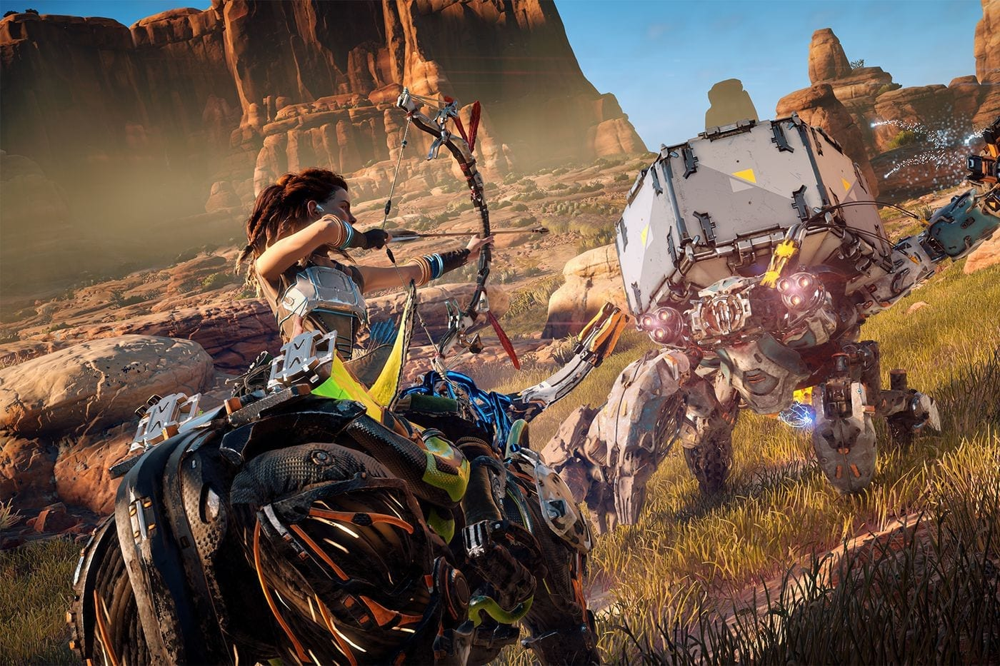
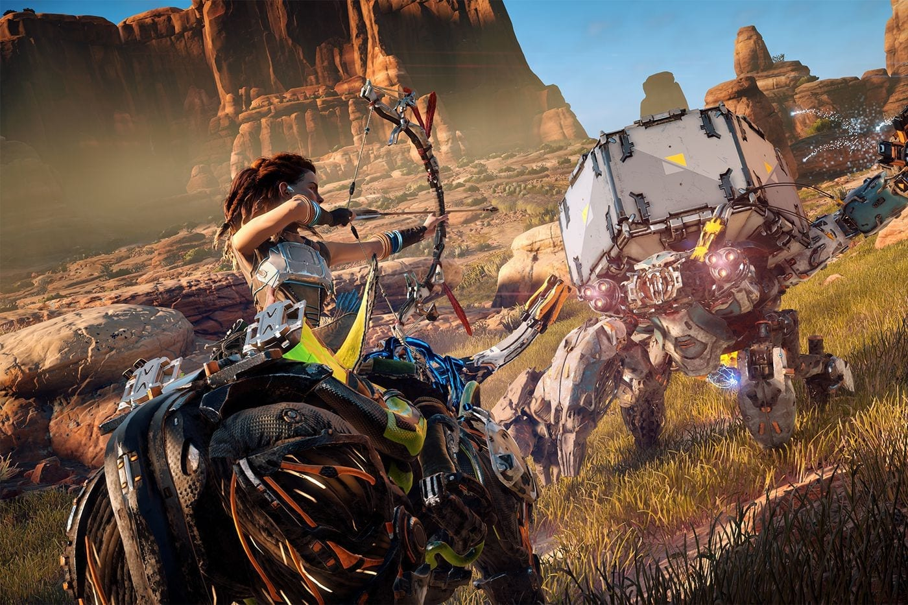

Horizon
Horizon Zero Dawn is een actie-rollenspel dat wordt gespeeld vanuit een third-person view.
Spelers nemen de controle over Aloy, een jager die zich door een post-apocalyptisch land waagt
dat wordt geregeerd door robotwezens. Aloy kan vijanden op verschillende manieren doden:
ze beschieten met pijlen, vallen zetten zoals struikeldraden met de Tripcaster,
explosieven gebruiken en een speer.
Actie
Avontuur
Fantasie
 

Systeemeisen
OS: Windows 10 64-bit
Processor: Intel Core i5-2500K@3.3GHz / AMD FX 6300 - 3.5GHz
Memory: 8GB Ram
Graphics: Nvidia GeForce GTX 780 / AMD Radeon R9 290
DirectX: Version 12
Storage: 100 GB Beschikbare ruimte